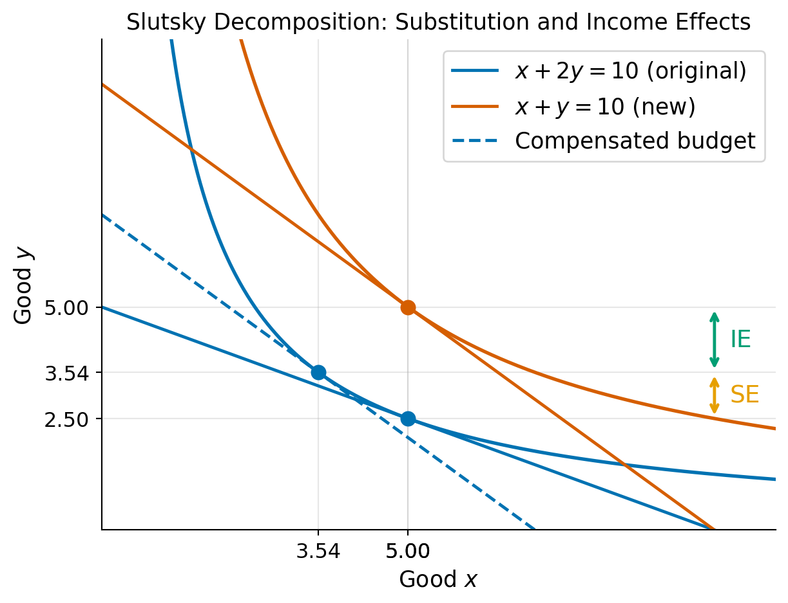

Part 1: Competitive Markets Practice Problem Solutions
Econ 502: Advanced Microeconomics
Consumer Theory
1. Demand Functions, Indirect Utility, and Expenditure Functions
(a) Cobb-Douglas
Demand functions. Set up the Lagrangian
\[\mathcal{L} = x^\alpha y^\beta + \lambda(m-p_x x - p_y y)\]
The first-order conditions are: \[\alpha x^{\alpha-1}y^\beta = \lambda p_x \qquad \text{and} \qquad \beta x^\alpha y^{\beta-1} = \lambda p_y\]
Dividing these two conditions eliminates \(\lambda\): \[\frac{\alpha y}{\beta x} = \frac{p_x}{p_y} \implies p_y y = \frac{\beta}{\alpha} p_x x\]
Substituting into the budget constraint \(p_x x + p_y y = m\): \[p_x x + \frac{\beta}{\alpha} p_x x = m \implies p_x x \cdot \frac{\alpha + \beta}{\alpha} = m\]
Noting that \(\alpha + \beta = 1\): \[\boxed{x^* = \frac{\alpha m}{p_x}, \qquad y^* = \frac{\beta m}{p_y}}\]
The consumer spends a constant fraction \(\alpha\) of income on good \(x\) and \(\beta\) on good \(y\), regardless of prices or income.
Indirect utility function. Substitute \(x^*\) and \(y^*\) into \(u\) and plugging in \(\alpha + \beta = 1\): \[\boxed{V(p_x, p_y, m) = \left(\frac{\alpha}{p_x}\right)^\alpha \left(\frac{\beta}{p_y}\right)^\beta m}\]
Expenditure function. Set \(V = u\) and solve for \(m = e(p_x, p_y, u)\): \[\boxed{e(p_x, p_y, u) = \left(\frac{p_x}{\alpha}\right)^\alpha \left(\frac{p_y}{\beta}\right)^\beta u}\]
Note that one can also derive the expenditure function by minimizing \(p_x x + p_y y\) subject to \(x^\alpha y^\beta =u\) and using the uncompensated (Hicksian) demand functions. But here since we already have the indirect utility function, it is easier to use the duality relationship \(e(p_x, p_y, u) = V^{-1}(p_x, p_y, u)\).
(b) Perfect Complements
Demand functions. The Leontief utility function \(u(x,y) = \min\{x,y\}\) has no interior tangency condition, so we use optimality directly: any expenditure on \(x\) beyond \(y\) (or vice versa) is wasted, so at the optimum \(x = y\). Substituting into the budget constraint: \[(p_x + p_y)\, x = m\]
\[\boxed{x^* = y^* = \frac{m}{p_x + p_y}}\]
Indirect utility function. Since \(u = \min\{x^*, y^*\} = x^* = y^*\): \[V(p_x, p_y, m) = \frac{m}{p_x + p_y}\]
Expenditure function. Setting \(V = u\) and solving for \(m = e\): \[e(p_x, p_y, u) = (p_x + p_y)\, u\]
(c) Perfect Substitutes
Demand functions. With \(u(x,y) = x + y\), the MRS equals \(1\) everywhere. The consumer buys only the cheaper good:
- If \(p_x < p_y\): buy only \(x\), so \(x^* = m/p_x\), \(y^* = 0\)
- If \(p_x > p_y\): buy only \(y\), so \(x^* = 0\), \(y^* = m/p_y\)
- If \(p_x = p_y\): any bundle satisfying \(p_x x + p_y y = m\)
\[\boxed{x^* = \begin{cases} m/p_x & \text{if } p_x < p_y \\ 0 & \text{if } p_x > p_y \end{cases}, \qquad y^* = \begin{cases} 0 & \text{if } p_x < p_y \\ m/p_y & \text{if } p_x > p_y \end{cases}}\]
Indirect utility function. The consumer always achieves utility \(m\) divided by the cheaper price: \[V(p_x, p_y, m) = \frac{m}{\min\{p_x, p_y\}}\]
Expenditure function. The minimum cost to reach utility \(u\) is to purchase \(u\) units of the cheaper good: \[e(p_x, p_y, u) = u \cdot \min\{p_x, p_y\}\]
(d) Constant Elasticity of Substitution (CES)
The utility function is given by: \[u(x,y) = \left(x^\rho + y^\rho\right)^{1/\rho}\]
Demand functions. Since \((\cdot)^{1/\rho}\) is a monotone transformation, we can equivalently maximize \(x^\rho + y^\rho\). The FOCs are: \[\rho x^{\rho-1} = \lambda p_x \qquad \text{and} \qquad \rho y^{\rho-1} = \lambda p_y\]
Dividing: \[\left(\dfrac{x}{y}\right)^{\rho-1} = \dfrac{p_x}{p_y} \implies x = y \left(\dfrac{p_x}{p_y}\right)^{1/(\rho-1)}\]
Substituting into the budget constraint:
\[ y\left(p_x \left(\frac{p_x}{p_y}\right)^{\frac{1}{\rho-1}} + p_y\right) = m\]
Rearranging:
\[y \cdot p_y^{-\frac{1}{\rho-1}} \left(p_x^{\frac{\rho}{\rho-1}} + p_y^{\frac{\rho}{\rho-1}}\right) = m\]
Define CES exponent \(\sigma \equiv \frac{\rho}{\rho - 1}\), so that \(\sigma - 1 = \frac{1}{\rho-1}\). Then:
\[\boxed{x^* = \frac{p_x^{\sigma-1}}{p_x^\sigma + p_y^\sigma}\, m, \qquad y^* = \frac{p_y^{\sigma-1}}{p_x^\sigma + p_y^\sigma}\, m}\]
Indirect utility function. Compute \((x^*)^\rho + (y^*)^\rho\). Since \(\rho(\sigma - 1) = \rho \cdot \frac{1}{\rho-1} = \sigma\): \[(x^*)^\rho + (y^*)^\rho = \frac{m^\rho\left(p_x^\sigma + p_y^\sigma\right)}{(p_x^\sigma + p_y^\sigma)^\rho} = m^\rho\, (p_x^\sigma + p_y^\sigma)^{1-\rho}\]
Therefore: \[V = \left[m^\rho (p_x^\sigma + p_y^\sigma)^{1-\rho}\right]^{1/\rho} = m \cdot (p_x^\sigma + p_y^\sigma)^{(1-\rho)/\rho}\]
By definition of \(\sigma\), we have \((1-\rho)/\rho = -1/\sigma\), giving the elegant result: \[V(p_x, p_y, m) = \frac{m}{\left(p_x^\sigma + p_y^\sigma\right)^{1/\sigma}}\]
Expenditure function. Setting \(V = u\) and solving for \(m = e\): \[e(p_x, p_y, u) = u \cdot \left(p_x^\sigma + p_y^\sigma\right)^{1/\sigma}, \qquad \text{where } \sigma = \frac{\rho}{\rho-1}\]
The price aggregator \((p_x^\sigma + p_y^\sigma)^{1/\sigma}\) is itself a CES function of prices. This duality between the utility function and the expenditure function is a hallmark of the CES family.
2. Elasticity of Substitution
(a) Derivation for Cobb-Douglas
For \(u(x, y) = x^\alpha y^\beta\), the marginal utilities are \(MU_x = \alpha x^{\alpha-1} y^\beta\) and \(MU_y = \beta x^\alpha y^{\beta-1}\), so: \[MRS_{xy} = \frac{MU_x}{MU_y} = \frac{\alpha}{\beta} \cdot \frac{y}{x}\]
Take logs of both sides: \[\ln(MRS) = \ln\!\left(\frac{\alpha}{\beta}\right) + \ln\!\left(\frac{y}{x}\right)\]
Differentiating: \[\sigma = \frac{d\ln(y/x)}{d\ln(MRS)} = 1 \qquad \boxed{\sigma = 1}\]
(b) Intuition
\(\sigma = 1\) means that a 1% increase in \(MRS_{xy}\) (equivalently, a 1% increase in the relative price \(p_x/p_y\) at the optimum) leads to exactly a 1% decrease in \(y/x\). Consumers substitute away from the more expensive good in exact proportion to the price change.
A direct implication is that expenditure shares are constant: with Cobb-Douglas preferences the consumer always spends fraction \(\alpha\) of income on \(x\) and fraction \(\beta\) on \(y\), regardless of prices. When \(p_x\) rises, the consumer buys less \(x\) in exactly the right proportion so that total spending on \(x\) stays at \(\alpha m\).
3. Hicksian Demand and Compensated Price Effects
The utility function is \(u(x,y)=xy\).
(a) Optimal bundle at old prices
The Lagrangian is \[\mathcal{L} = xy + \lambda(m - p_x x - p_y y)\]
The first-order conditions are: \[y = \lambda p_x \qquad \text{and} \qquad x = \lambda p_y\]
Dividing: \(y/x = p_x/p_y\), which gives \(p_x x = p_y y\), so the consumer spends equally on both goods. Substituting into the budget constraint \(p_x x + p_y y = m\): \[2p_x x = m \implies x^* = \frac{m}{2p_x}, \qquad y^* = \frac{m}{2p_y}\]
At \(p_x=1\), \(p_y=2\), \(m=10\): \[\boxed{x^* = \frac{10}{2(1)} = 5, \qquad y^* = \frac{10}{2(2)} = 2.5}\]
(b) New optimal bundle
At new prices \(p_x=1\) and \(p_y=1\), using the same demand functions: \[\boxed{x^* = \frac{10}{2(1)} = 5, \qquad y^* = \frac{10}{2(1)} = 5}\]
The total change in demand for good \(y\) is \(\Delta y = 5 - 2.5 = 2.5\).
(c) Hicksian Demand, SE and IE
Hicksian demand. Lagrangian for the expenditure minimization problem is:
\[ \mathcal{L} = p_x x + p_y y + \mu(u - xy) \]
The FOCs imply \(p_x = \mu y\) and \(p_y = \mu x\), so again \(p_x x = p_y y\). Substituting \(x = (p_y/p_x)y\) into the constraint \(xy = u\): \[\frac{p_y}{p_x} y^2 = u \implies y_h(p_x, p_y, u) = \sqrt{\frac{p_x\, u}{p_y}}\]
Similarly, \(x_h(p_x, p_y, u) = \sqrt{\frac{p_y\, u}{p_x}}\).
The initial utility level is \(u_0 = x^* y^* = 5 \times 2.5 = 12.5\).
Note that \(x_h(1, 2, 12.5) = 5\) and \(y_h(1, 2, 12.5) = 2.5\), so the Hicksian demand at the original prices and utility level coincides with the Marshallian demand.
Substitution effect. Hold utility fixed at \(u_0 = 12.5\) and change \(p_y\) from 2 to 1: \[\text{SE} = y_h(1,\,1,\,12.5) - y_h(1,\,2,\,12.5) = \sqrt{12.5} - 2.5 \approx 1.04\]
Holding utility fixed isolates the substitution effect because the consumer is compensated to be just as well off as before, so any change in demand is due to the change in relative prices.
Income effect. The remainder of the total change: \[\text{IE} = \Delta y - \text{SE} = 2.5 - 1.04 = 1.46\]
Both effects are positive because good \(y\) is a normal good and the price decrease makes the consumer richer. The income effect here is larger than the substitution effect.
See graph below for a visual representation of the substitution and income effects.
(d) Intuition for substitution and income effects
When the price of good \(y\) falls, in this case it’s demand increases from 2.5 to 5. There are two reasons for this increase:
- Substitution effect: The price of good \(y\) has fallen relative to good \(x\), so the consumer substitutes away from \(x\) and toward \(y\).
- Income effect: The decrease in the price of good \(y\) effectively increases the consumer’s real income, allowing them to afford more of both goods.
(e) Compensating variation
We need to find the expenditure change that would make the consumer just as well off as before the price change, given the new prices. Given the Hicksian demand functions from part (c), the expenditure function is: \[e(p_x, p_y, u) = p_x x_h(p_x, p_y, u) + p_y y_h(p_x, p_y, u) = 2\sqrt{p_x\, p_y\, u}\]
Remember the original utility \(u_0 = 12.5\). At the new prices \((p_x=1,\, p_y=1)\): \[e(1,\, 1,\, 12.5) = 2\sqrt{1 \cdot 1 \cdot 12.5} = 2\sqrt{12.5} = 5\sqrt{2} \approx 7.07\]
Since their actual income is \(m=10\), the consumer could give up \[\text{CV} = m - e(1,\,1,\,u_0) = 10 - 5\sqrt{2} \approx \$2.93\]
and still be exactly as well off as before the price change. This quantity, \(\text{CV} = \approx \$2.93\), is the compensating variation, which measures the welfare gain from the price decrease in dollar terms.
4. Stone-Geary Utility (Textbook Ex 4.12)
(a) Optimal expenditures
Let \(\tilde{x} = x - x_0\) denote consumption above the subsistence level. Substituting into the budget constraint \(p_x x + p_y y = I\): \[p_x(\tilde{x} + x_0) + p_y y = I \implies p_x \tilde{x} + p_y y = I - p_x x_0 \equiv \tilde{I}\]
where \(\tilde{I} = I - p_x x_0 > 0\) is supernumerary income (income above the cost of subsistence). The problem now is to maximize \(\tilde{x}^\alpha y^\beta\) subject to \(p_x \tilde{x} + p_y y = \tilde{I}\), which is exactly the Cobb-Douglas problem. By the result from problem 1(a): \[\tilde{x}^* = \frac{\alpha \tilde{I}}{p_x}, \qquad y^* = \frac{\beta \tilde{I}}{p_y}\]
Converting back to \(x^* = x_0 + \tilde{x}^*\), expenditures are: \[\boxed{p_x x^* = p_x x_0 + \alpha(I - p_x x_0), \qquad p_y y^* = \beta(I - p_x x_0)}\]
Interpretation. The consumer first sets aside \(p_x x_0\) to meet subsistence needs. The remaining supernumerary income \(\tilde{I} = I - p_x x_0\) is then allocated in fixed proportions \(\alpha\) and \(\beta\), just as in the standard Cobb-Douglas case.
5. Cash vs. In-Kind Transfers
Why cash is at least as good as in-kind transfers. Consider a household with income \(I\) that receives a transfer of \(T\) dollars. Under a cash transfer, the budget constraint shifts outward uniformly: the household can spend the extra \(T\) on any combination of food (\(x\)) and other goods (\(y\)). Under an in-kind food transfer (e.g., SNAP), the household receives vouchers worth \(T\) that can only be spent on food, requiring consumption of at least \(T/p_x\) units of \(x\).
Two cases arise:
Transfer does not bind. If the household would voluntarily spend at least \(T\) on food even with a cash transfer, the in-kind constraint is not binding. The household reaches the same optimum under both programs. Cash and in-kind are equivalent.
Transfer binds. If the household would prefer to spend less than \(T\) on food, the in-kind transfer forces them to a kink point on the budget set. That kink lies on a lower indifference curve than the cash optimum. Cash is therefore strictly preferred.
In both cases, cash is at least as good as in-kind. This is an application of the Lump Sum Principle: unconditional transfers maximize consumer welfare for a given government expenditure, because they leave households free to allocate resources optimally.
Why policymakers still use in-kind transfers.
- Paternalism. Society may value recipients consuming food or housing more than recipients themselves do (e.g., child nutrition, health externalities).
- Political economy. In-kind transfers are easier to justify to taxpayers who want assurance that aid goes toward necessities.
- Targeting / self-selection. Accepting food vouchers (rather than cash) may be less attractive to higher-income households, helping to screen recipients and reduce leakage to the non-poor.
- Price and market effects. Large-scale food voucher programs can support agricultural incomes, creating political constituencies that sustain the program.
See the figure on slides for lecture 1, which shows the binding case: the household’s preferred cash optimum requires less food than the in-kind transfer mandates, so the in-kind constraint forces the household to the kink, which lies on a lower indifference curve.
6. Income and Substitution Effects with Perfect Complements
(a) Optimal bundle at old prices
For \(U = \min\{x, 2y\}\), utility is maximized at the kink where both arguments are equal: \(x = 2y\). Substituting into the budget constraint \(2x + y = 90\): \[2(2y) + y = 5y = 90 \implies y^* = 18, \quad x^* = 36\]
(b) New optimal bundle
The kink condition \(x = 2y\) still holds at the new prices. Substituting into the new budget constraint \(4x + y = 90\): \[4(2y) + y = 9y = 90 \implies y^* = 10, \quad x^* = 20\]
The change in demand for \(x\): \[\Delta x = 20 - 36 = -16\]
(c) Slutsky decomposition
Hicksian demand. The initial utility level is \(u_0 = \min\{36,\, 2\times 18\} = 36\). To reach \(u_0\) at minimum cost, the consumer must satisfy the kink condition \(x = 2y\) and \(\min\{x, 2y\} = u_0\), giving: \[x_h(p_x, p_y, u) = u, \qquad y_h(p_x, p_y, u) = \frac{u}{2}\]
The Hicksian demands are independent of prices, which is typical of perfect complements.
Substitution effect. Since Hicksian demands do not change with prices: \[\text{SE} = x_h(4,\,1,\,36) - x_h(2,\,1,\,36) = 36 - 36 = \boxed{0}\]
Income effect. The entire change in demand is an income effect: \[\text{IE} = \Delta x - \text{SE} = -16\]
Intuition. Perfect complements are always consumed in a fixed ratio (\(x = 2y\)) regardless of relative prices. A change in the price of \(x\) cannot induce substitution toward \(y\) because the two goods are useless without each other. The entire demand response comes from the reduction in real purchasing power (income effect).
Firm Optimization and Competitive Equilibrium
7. Cost Minimization and Profit Maximization
(a) Returns to scale
Check how output scales when all inputs are multiplied by \(t > 0\): \[f(tK, tL) = (tK)^{1/3}(tL)^{1/3} = t^{2/3}\,K^{1/3}L^{1/3} = t^{2/3}\,Q\]
Since the scale factor \(2/3 < 1\), the technology exhibits decreasing returns to scale (DRS). Doubling inputs (\(t=2\)) increases output by a factor of \(2^{2/3} \approx 1.59\), which is less than double. With DRS, larger output requires proportionally more inputs, so the long-run average cost curve should be upward sloping.
(b) Conditional factor demands and cost function
Cost minimization: \(\min_{K,L}\; rK + wL \quad \text{s.t.} \quad K^{1/3}L^{1/3} = Q\)
Setting up the Lagrangian: \[\mathcal{L} = rK + wL + \lambda(Q - K^{1/3}L^{1/3})\]
FOCs: \[r = \frac{\lambda}{3}K^{-2/3}L^{1/3}, \qquad w = \frac{\lambda}{3}K^{1/3}L^{-2/3}\]
Dividing: \(r/w = L/K\), so \(K = (w/r)L\). Substituting into the constraint: \[\left(\frac{w}{r}\right)^{1/3} L^{2/3} = Q \implies L^{2/3} = Q\left(\frac{r}{w}\right)^{1/3}\]
\[\boxed{L^*(r,w,Q) = Q^{3/2}\left(\frac{r}{w}\right)^{1/2}, \qquad K^*(r,w,Q) = Q^{3/2}\left(\frac{w}{r}\right)^{1/2}}\]
The cost function is: \[C(r,w,Q) = rK^* + wL^* = r\cdot Q^{3/2}\!\left(\frac{w}{r}\right)^{1/2} + w\cdot Q^{3/2}\!\left(\frac{r}{w}\right)^{1/2} = 2\sqrt{rw}\; Q^{3/2}\]
At \(r = w = 1\): \[\boxed{C(Q) = 2Q^{3/2}}\]
(c) Average and marginal cost
\[AC(Q) = \frac{C}{Q} = 2Q^{1/2}, \qquad MC(Q) = C'(Q) = 3Q^{1/2}\]
MC > AC for all \(Q > 0\): \(3Q^{1/2} > 2Q^{1/2}\) since \(3 > 2\). Because \(MC > AC\), each additional unit costs more than the average, pulling the average up, so AC is strictly increasing. This is consistent with DRS: expanding output becomes increasingly costly per unit.
(d) Profit maximization at \(p = 6\)
Set \(p = MC\): \[6 = 3Q^{1/2} \implies Q^{1/2} = 2 \implies Q^* = 4\]
| Value | |
|---|---|
| Total revenue | \(6 \times 4 = 24\) |
| Total cost | \(2(4)^{3/2} = 2\times 8 = 16\) |
| Profit | \(\mathbf{24 - 16 = 8 > 0}\) |
The firm earns positive profit \(\pi = 8 > 0\).
Is this consistent with long-run competitive equilibrium? With DRS, \(MC > AC\) at every \(Q > 0\), so \(\pi > 0\) at any \(p > 0\) so there is no price at which a firm with this technology breaks even at positive output. This creates an apparent conundrum: if we invoke free entry of identical firms, positive profits attract entry indefinitely, and no finite equilibrium exists.
The standard resolution is that DRS reflects an implicit fixed factor, for example, a plot of land, a license, or an entrepreneur’s scarce talent that is not explicitly priced in the model. If \(Q = K^{1/3}L^{1/3}M^{1/3}\) with \(M\) fixed at \(\bar{M}=1\), the technology is actually CRS in all three inputs, and the apparent “profit” is simply the market rent on the fixed factor \(M\). Once we include the opportunity cost of \(M\) at its competitive rental rate in total costs, economic profit is zero and the equilibrium is consistent with free entry.
8. Short-Run Supply and Long-Run Equilibrium
(a) Cost curves and minimum AC
We are given the short-run cost function: \[C(Q) = 50 + 10Q + 2Q^2\]
where \(50\) is fixed cost (FC) and \(10Q + 2Q^2\) is variable cost (VC).
Short run marginal cost:
\[SMC(Q) = C'(Q) = 10 + 4Q\]
Average cost: \[SAC(Q) = \frac{C(Q)}{Q} = \frac{50}{Q} + 10 + 2Q\]
Average variable cost: \[SAVC(Q) = \frac{10Q + 2Q^2}{Q} = 10 + 2Q\]
To minimize \(SAC\), set \(\frac{d(SAC)}{dQ} = 0\): \[-\frac{50}{Q^2} + 2 = 0 \implies Q^2 = 25 \implies Q_{\min} = 5\] \[\text{min}\;SAC = \frac{50}{5} + 10 + 2(5) = 10 + 10 + 10 = \boxed{30}\]
Verify: \(SMC(5) = 10 + 4(5) = 30 = SAC(5)\) ✓
(b) Short-run supply curve
The firm shuts down if \(p < \min SAVC\). Since \(SAVC = 10 + 2Q\), which is minimized at \(Q = 0\) giving \(\min SAVC = 10\), the firm shuts down if \(p < 10\).
For \(p \geq 10\), set \(p = SMC = 10 + 4Q\) and solve: \[\boxed{Q^s(p) = \frac{p - 10}{4}, \quad p \geq 10; \qquad Q^s(p) = 0, \quad p < 10}\]
The firm breaks even (zero economic profit) at the minimum of \(SAC\): \[p_{\text{break-even}} = \min\;SAC = 30\]
(c) Profit at \(p = 50\)
\[Q^* = \frac{50 - 10}{4} = 10\]
| Value | |
|---|---|
| Total revenue | \(50 \times 10 = 500\) |
| Total cost | \(50 + 10(10) + 2(100) = 350\) |
| Profit | \(\mathbf{500 - 350 = 150}\) |
(d) Long-run competitive equilibrium
With free entry and exit of identical firms, long-run equilibrium requires zero profit, so: \[p^* = \min\;SAC = 30\]
At \(p^* = 30\), each firm produces \(Q_{\text{firm}} = (30-10)/4 = 5\). Market demand at this price: \[Q^D = 200 - 5(30) = 50\]
Number of firms in equilibrium: \[N^* = \frac{Q^D}{Q_{\text{firm}}} = \frac{50}{5} = \boxed{10 \text{ firms}}\]
9. Competitive Equilibrium and Tax Incidence
(a) Pre-tax equilibrium and welfare
Set \(Q^D = Q^S\): \[240 - 2P = 3P - 60 \implies 300 = 5P \implies P^* = 60, \quad Q^* = 120\]
The demand curve hits the price axis at \(P = 120\) (set \(Q^D = 0\)); the supply curve hits at \(P = 20\) (set \(Q^S = 0\)).
\[CS = \frac{1}{2}(120 - 60)(120) = \frac{1}{2}(60)(120) = 3600\] \[PS = \frac{1}{2}(60 - 20)(120) = \frac{1}{2}(40)(120) = 2400\] \[\text{Total Welfare} = CS + PS = \boxed{6000}\]
(b) Equilibrium with tax \(t = 25\) on producers
A per-unit tax on producers drives a wedge \(P^D - P^S = t = 25\) between the consumer price and the producer price. The quantity traded satisfies both sides simultaneously: \[Q^D(P^D) = Q^S(P^S) \quad \text{with } P^S = P^D - 25\]
Substituting: \[240 - 2P^D = 3(P^D - 25) - 60 = 3P^D - 135 \implies 375 = 5P^D\] \[\boxed{P^D = 75, \quad P^S = 50, \quad Q_t = 90}\]
(c) Tax incidence
Price elasticities evaluated at the pre-tax equilibrium \((P^* = 60,\, Q^* = 120)\): \[\varepsilon_D = \frac{dQ^D}{dP}\cdot\frac{P^*}{Q^*} = (-2)\cdot\frac{60}{120} = -1\] \[\varepsilon_S = \frac{dQ^S}{dP}\cdot\frac{P^*}{Q^*} = (3)\cdot\frac{60}{120} = 1.5\]
The standard tax-incidence formula gives the fraction of the tax borne by each side: \[\text{Consumer share} = \frac{\varepsilon_S}{|\varepsilon_D| + \varepsilon_S} = \frac{1.5}{1 + 1.5} = \frac{1.5}{2.5} = 60\%\] \[\text{Producer share} = \frac{|\varepsilon_D|}{|\varepsilon_D| + \varepsilon_S} = \frac{1.0}{2.5} = 40\%\]
Direct verification: \[P^D - P^* = 75 - 60 = 15 \quad (60\% \text{ of } t = 25) \checkmark\] \[P^* - P^S = 60 - 50 = 10 \quad (40\% \text{ of } t = 25) \checkmark\]
Because supply is more elastic than demand (\(\varepsilon_S > |\varepsilon_D|\)), consumers bear the larger share of the tax.
(d) Tax revenue, DWL, and welfare changes
\[\text{Tax Revenue} = t \times Q_t = 25 \times 90 = 2250\]
\[CS_{\text{new}} = \frac{1}{2}(120 - 75)(90) = 2025 \implies \Delta CS = 2025 - 3600 = -1575\] \[PS_{\text{new}} = \frac{1}{2}(50 - 20)(90) = 1350 \implies \Delta PS = 1350 - 2400 = -1050\]
\[DWL = \frac{1}{2}(t)(Q^* - Q_t) = \frac{1}{2}(25)(30) = \boxed{375}\]
Verification: \[\Delta CS + \Delta PS + \text{Tax Revenue} + \text{DWL} = -1575 + (-1050) + 2250 + 375 = 0 \checkmark\]
(e) DWL formula in terms of elasticities
Derivation. The DWL equals \(\frac{1}{2} \cdot t \cdot |\Delta Q|\), where \(|\Delta Q| = Q^* - Q_t\) is the tax-induced reduction in quantity. To express \(|\Delta Q|\) in terms of elasticities, use the market equilibrium conditions. A tax \(t\) creates a wedge \(\Delta P^D - \Delta P^S = t\) between the consumer price change \(\Delta P^D = P^D - P^*\) and the producer price change \(\Delta P^S = P^S - P^*\). Quantity adjusts on both sides by the same amount \(-|\Delta Q|\):
\[-|\Delta Q| = \varepsilon_D \cdot \frac{Q^*}{P^*} \cdot \Delta P^D \quad \Longrightarrow \quad \Delta P^D = -\frac{|\Delta Q| \cdot P^*}{\varepsilon_D \cdot Q^*} = \frac{|\Delta Q| \cdot P^*}{|\varepsilon_D| \cdot Q^*}\]
\[-|\Delta Q| = \varepsilon_S \cdot \frac{Q^*}{P^*} \cdot \Delta P^S \quad \Longrightarrow \quad \Delta P^S = -\frac{|\Delta Q| \cdot P^*}{\varepsilon_S \cdot Q^*}\]
Substituting into the wedge condition:
\[t = \Delta P^D - \Delta P^S = \frac{|\Delta Q| \cdot P^*}{Q^*}\left(\frac{1}{|\varepsilon_D|} + \frac{1}{\varepsilon_S}\right) = \frac{|\Delta Q| \cdot P^*}{Q^*} \cdot \frac{|\varepsilon_D| + \varepsilon_S}{|\varepsilon_D| \cdot \varepsilon_S}\]
Solving for \(|\Delta Q|\):
\[|\Delta Q| = \frac{|\varepsilon_D| \cdot \varepsilon_S}{|\varepsilon_D| + \varepsilon_S} \cdot \frac{t \cdot Q^*}{P^*}\]
Therefore:
\[DWL = \frac{1}{2} \cdot t \cdot |\Delta Q| = \boxed{\frac{1}{2} \cdot \frac{|\varepsilon_D|\,\varepsilon_S}{|\varepsilon_D| + \varepsilon_S} \cdot \frac{t^2}{P^*} \cdot Q^*}\]
Numerical verification with \(|\varepsilon_D| = 1\), \(\varepsilon_S = 1.5\), \(t = 25\), \(P^* = 60\), \(Q^* = 120\):
\[DWL = \frac{1}{2} \cdot \frac{1 \times 1.5}{1 + 1.5} \cdot \frac{625}{60} \cdot 120 = \frac{1}{2} \cdot 0.6 \cdot 1250 = 375 \checkmark\]
Intuition. Three features of the formula are worth noting:
Both elasticities raise DWL. The term \(\frac{|\varepsilon_D|\,\varepsilon_S}{|\varepsilon_D|+\varepsilon_S}\) is increasing in both \(|\varepsilon_D|\) and \(\varepsilon_S\). The more responsive buyers and sellers are to prices, the larger the quantity reduction — and hence the larger the efficiency loss.
Zero elasticity on either side eliminates DWL. If demand or supply is perfectly inelastic (\(|\varepsilon_D| = 0\) or \(\varepsilon_S = 0\)), then \(|\Delta Q| = 0\): the tax causes no quantity distortion and generates no deadweight loss (all revenue comes from a lump-sum extraction from one side of the market). This is why taxes on inelastic goods (e.g., basic necessities) are efficient even if inequitable.
DWL grows with \(t^2\). Doubling the tax rate quadruples the deadweight loss. This is why economists often prefer broad, low-rate taxes over narrow, high-rate taxes.
10. Conceptual Question on Tax Incidence
The senator’s claim is incorrect. Tax incidence (how the burden of a tax is actually distributed between buyers and sellers) is determined entirely by the relative price elasticities of supply and demand, not by who legally remits the tax to the government.
To see this, note that what matters for equilibrium is the wedge \(P^D - P^S = t\). Whether the wedge is created by taxing producers (supply curve shifts up by \(t\)) or taxing consumers (demand curve shifts down by \(t\)), the resulting equilibrium consumer price, producer price, and quantity are identical. The market cannot tell the difference.
The burden shares are: \[\text{Consumer share} = \frac{\varepsilon_S}{|\varepsilon_D| + \varepsilon_S}, \quad \text{Producer share} = \frac{|\varepsilon_D|}{|\varepsilon_D| + \varepsilon_S}\]
For producers to bear the entire burden, we need the consumer share to equal zero: \[\frac{\varepsilon_S}{|\varepsilon_D| + \varepsilon_S} = 0\]
This holds when either:
- Supply is perfectly inelastic (\(\varepsilon_S = 0\)): Producers cannot adjust quantity regardless of price, so the entire burden falls on them. The supply curve is vertical and the consumer price does not change.
- Demand is perfectly elastic (\(|\varepsilon_D| \to \infty\)): Any increase in the consumer price causes demand to collapse to zero, so producers must absorb the full tax to keep the consumer price unchanged.
In practice, neither extreme holds, so both sides bear some portion of the tax burden.
Exchange Economies and Welfare Theorems
11. Exchange Economy and General Equilibrium
(a) MRS at the endowment and Pareto efficiency
For \(U = xy\), the \(MRS\) is \(\frac{MU_x}{MU_y} = \frac{y}{x}\).
\[MRS_A = \frac{y_A}{x_A}\bigg|_{\omega_A} = \frac{2}{8} = \frac{1}{4}, \qquad MRS_B = \frac{y_B}{x_B}\bigg|_{\omega_B} = \frac{8}{2} = 4\]
Since \(MRS_A \neq MRS_B\), the endowment allocation is not Pareto efficient; there are unexploited gains from trade.
Intuitively: Consumer A is endowed with relatively more \(x\) and values it less (low \(MRS\)), while consumer B is endowed with relatively more \(y\) and values \(x\) more (high \(MRS\)). A will want to trade \(x\) away in exchange for \(y\), and B will want to trade \(y\) away in exchange for \(x\).
(b) Contract curve
Pareto efficiency requires \(MRS_A = MRS_B\). With \(x_B = 10 - x_A\) and \(y_B = 10 - y_A\): \[\frac{y_A}{x_A} = \frac{10 - y_A}{10 - x_A}\]
Cross-multiplying: \[y_A(10 - x_A) = x_A(10 - y_A) \implies 10y_A = 10x_A\] \[\boxed{y_A = x_A}\]
The contract curve is the main diagonal of the Edgeworth box, running from corner \((0,0)\) to corner \((10,10)\) (from A’s perspective). At every point on this line, both consumers hold equal quantities of both goods.
(c) Competitive equilibrium
Let \(p = p_x/p_y\) and normalize \(p_y = 1\).
Consumer A’s income: \(I_A = 8p + 2\). With equal-share Cobb-Douglas: \[x_A = \frac{I_A}{2p} = 4 + \frac{1}{p}, \qquad y_A = \frac{I_A}{2} = 4p + 1\]
Consumer B’s income: \(I_B = 2p + 8\). \[x_B = \frac{I_B}{2p} = 1 + \frac{4}{p}, \qquad y_B = \frac{I_B}{2} = p + 4\]
Market clearing for \(x\): \[x_A + x_B = 10 \implies \left(4 + \frac{1}{p}\right) + \left(1 + \frac{4}{p}\right) = 10 \implies 5 + \frac{5}{p} = 10 \implies p^* = 1\]
Equilibrium allocation at \(p^* = 1\): \[x_A = 5,\; y_A = 5, \qquad x_B = 5,\; y_B = 5\]
Verify on the contract curve: \(y_A = 5 = x_A\) ✓. Verify market clearing for \(y\): \(5 + 5 = 10\) ✓.
(d) Welfare theorems and lump-sum transfer
First Welfare Theorem: Every competitive equilibrium allocation is Pareto efficient, provided markets are competitive, complete, and there are no externalities.
Second Welfare Theorem: Every Pareto efficient allocation can be supported as a competitive equilibrium after appropriate lump-sum redistribution of endowments, provided preferences are convex.
The planner wants \((x_A, y_A) = (3, 3)\), which lies on the contract curve (\(y_A = x_A\) ✓). At \(p^* = 1\), this requires consumer A to have income \(I_A = 2 \times 3 = 6\) (since \(x_A = I_A/2 = 3\)).
A’s original income at \(p^* = 1\) is \(8(1) + 2(1) = 10\). We must reduce it by \(4\).
Required transfer: Reassign 4 units of good \(x\) from A to B: \[\omega_A' = (4,\, 2), \qquad \omega_B' = (6,\, 8)\]
At \(p^* = 1\): \(I_A = 4 + 2 = 6 \Rightarrow x_A = 3,\; y_A = 3\) ✓ and \(I_B = 6 + 8 = 14 \Rightarrow x_B = 7,\; y_B = 7\) ✓.
12. Welfare Theorems and Policy Design
First Welfare Theorem
Statement: If all markets are perfectly competitive and there are no externalities or public goods, then every competitive equilibrium allocation is Pareto efficient.
More precisely, the theorem requires: (i) price-taking behavior by all buyers and sellers, (ii) complete markets (a market exists for every good), (iii) no externalities (private and social costs/benefits coincide), and (iv) no information asymmetries.
This is Adam Smith’s “invisible hand” result stated formally: decentralized decisions by self-interested agents, coordinated only by prices, lead to an outcome where no one can be made better off without making someone else worse off.
Second Welfare Theorem
Statement: If preferences and production sets are convex, then any Pareto efficient allocation can be supported as a competitive equilibrium, provided appropriate lump-sum transfers of initial endowments are made beforehand.
The key additional condition relative to the FWT is convexity i.e. diminishing marginal rates of substitution for consumers and non-increasing returns to scale for firms. Given convexity, the government can, in principle, reach any point on the Pareto frontier by first redistributing endowments, then letting markets operate.
Policy implications
Taken together, the two theorems have several important implications for policy design:
Markets as a benchmark. The FWT establishes conditions under which free markets achieve efficiency. It provides the theoretical foundation for market-based economies and sets a standard against which actual market performance can be measured.
Market failures justify intervention. The FWT also identifies precisely when markets fail: externalities, public goods, market power, and information asymmetries all violate the theorem’s conditions. In each case, there is a potential role for government to improve welfare through taxes, public provision, antitrust policy, or disclosure requirements.
Separating efficiency from equity. The SWT implies that efficiency and equity are separable objectives. Society need not choose between an efficient market outcome and a more equitable distribution — it can achieve any desired allocation on the Pareto frontier by redistributing initial endowments (via lump-sum taxes and transfers) and then relying on competitive markets for efficiency. This means that distortionary policies (price controls, targeted subsidies) are generally an inferior way to pursue equity goals, since they sacrifice efficiency.
The second-best problem. In practice, the lump-sum transfers required by the SWT are infeasible: they would require the government to have perfect information about individuals’ abilities, endowments, and preferences. Real-world redistribution — income taxes, transfers, in-kind benefits — inevitably distorts behavior and creates deadweight losses. Policymakers therefore face a genuine trade-off between equity and efficiency, and must seek “second-best” policies that balance the two.